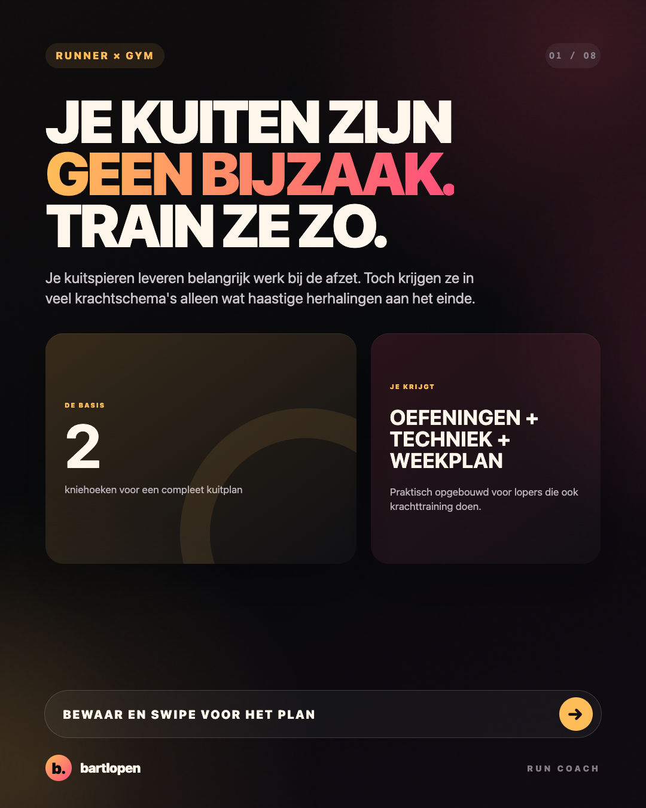
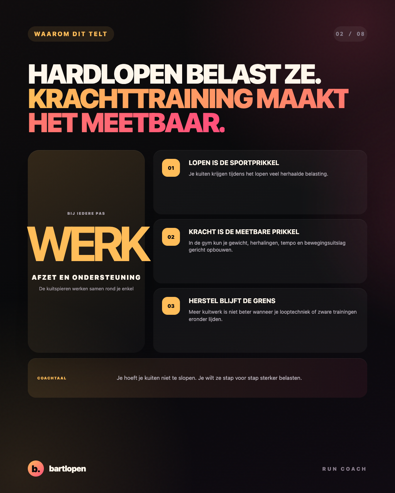
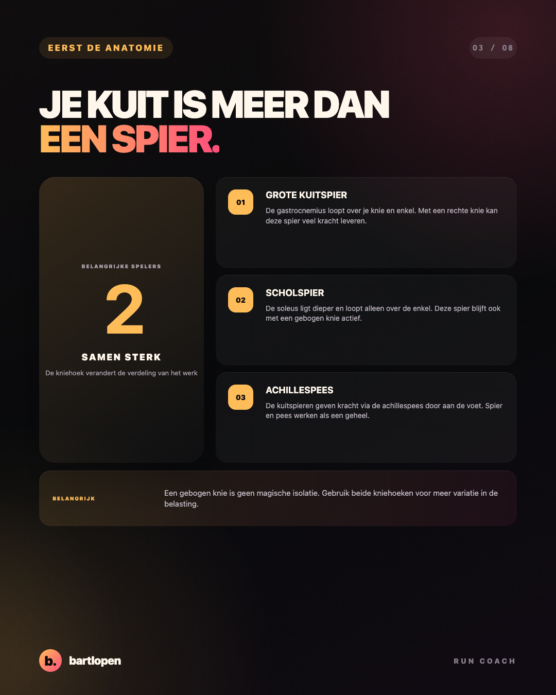
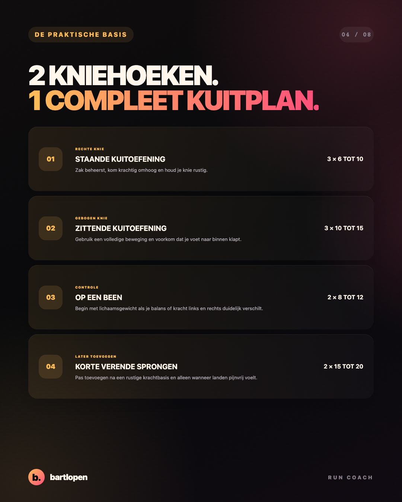
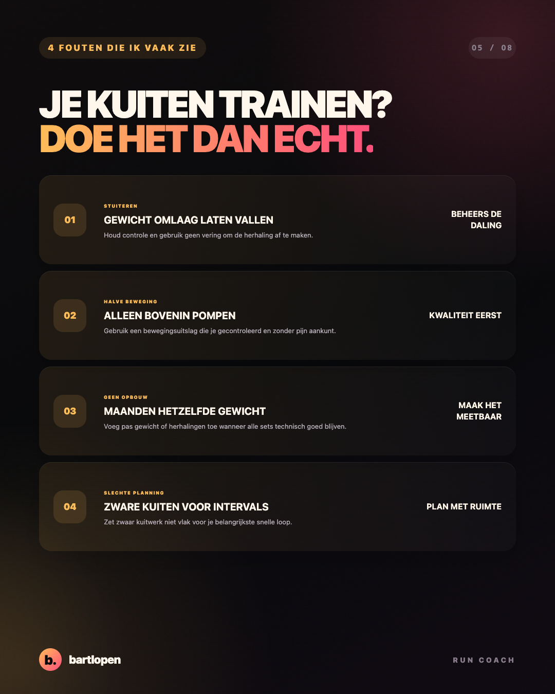
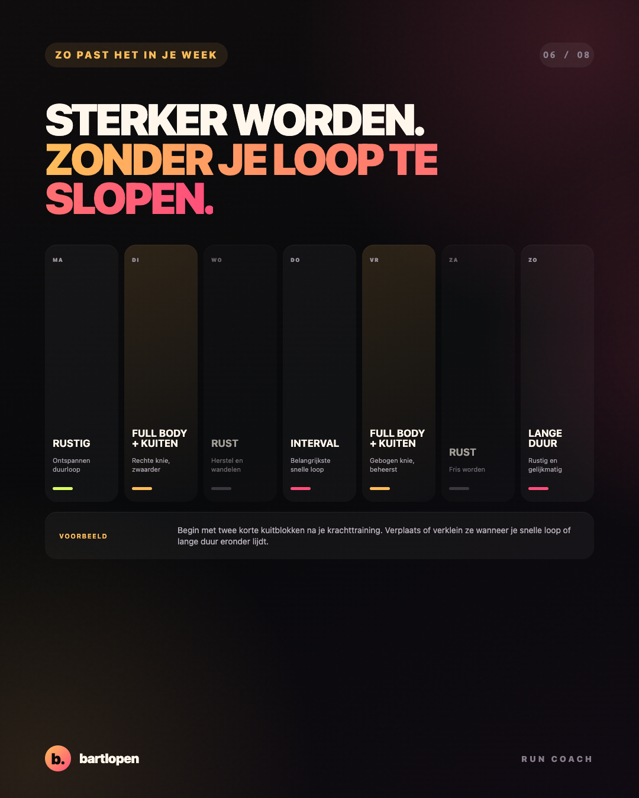
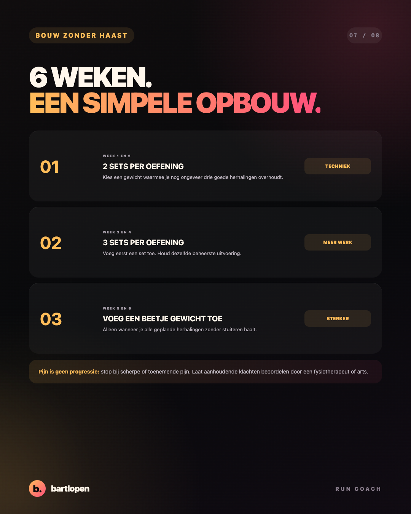
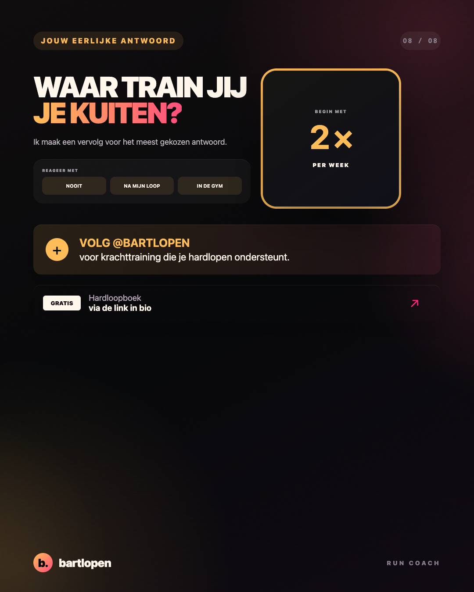

SLIDE 01 ↗Je kuiten zijn
geen bijzaak
Acht slides over de functie van je kuitspieren, twee nuttige kniehoeken, technische uitvoering en een haalbare plek in je hardloopweek.

SLIDE 02 ↗
SLIDE 03 ↗
SLIDE 04 ↗
SLIDE 05 ↗
SLIDE 06 ↗
SLIDE 07 ↗
SLIDE 08 ↗Caption
JE KUITEN ZIJN GEEN BIJZAAK. TRAIN ZE DAN OOK NIET ALS BIJZAAK. 👀 Je kuitspieren leveren veel werk tijdens het hardlopen. Toch eindigt kuittraining bij veel lopers met wat snelle herhalingen wanneer de rest van de training al klaar is. Maak het simpel: ✅ train met een rechte knie ✅ train ook met een gebogen knie ✅ gebruik een beheerste beweging ✅ bouw gewicht en sets rustig op ✅ plan zwaar kuitwerk niet vlak voor je belangrijkste loop Begin bijvoorbeeld twee keer per week na je krachttraining. Kies eerst twee sets per oefening en houd nog een paar goede herhalingen over. Je hoeft je kuiten niet te slopen. Je wilt ze sterker maken zonder dat je hardlooptraining eronder lijdt. Waar train jij je kuiten: nooit, na je loop of in de gym? 👇 #hardlopen #kuittraining #krachttraining #hardlooptips #runningtips #hybridtraining #bartlopen
Onderbouwing: onderzoek naar de bijdrage van kuitspieren aan afzet en ondersteuning tijdens hardlopen, een systematische review naar krachttraining en loopeconomie, onderzoek naar staande en zittende kuittraining en onderzoek naar de invloed van de kniehoek. De sets en weekindeling zijn coachvoorbeelden en geen individueel schema.